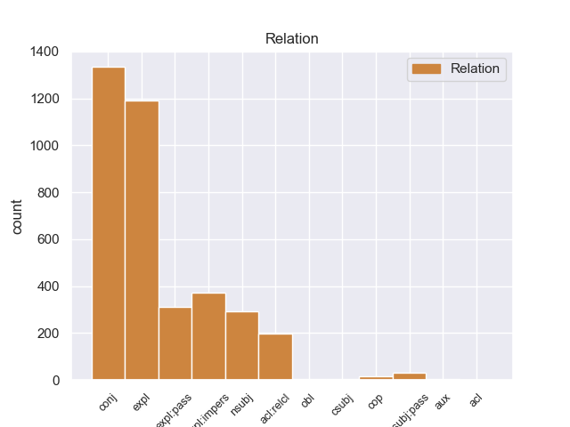
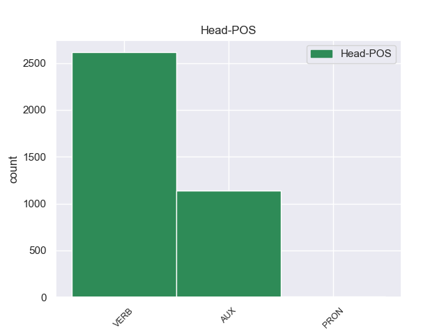
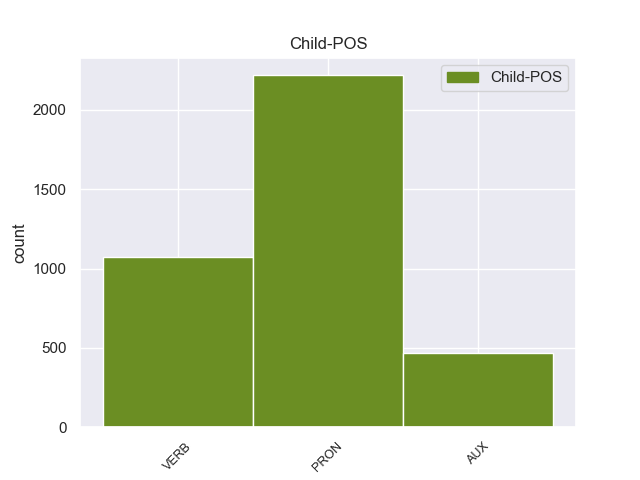

Distribution of features within this leaf



Agreement Rules sorted by frequency.
- When the dependent token is the conjunct(conj) of the head token,
1 Quando _ _ _ _ 0 _ _ _
2 il _ _ _ _ 0 _ _ _
3 terremoto _ _ _ _ 0 _ _ _
4 è _ _ _ _ 0 _ _ _
5 forte _ _ _ _ 0 _ _ _
6 , _ _ _ _ 0 _ _ _
7 si _ _ _ _ 0 _ _ _
8 rovinano rovinare VERB V Mood=Ind|Number=Plur|Person=3|Tense=Pres|VerbForm=Fin 0 _ _ _
9 o _ _ _ _ 0 _ _ _
10 crollano crollare VERB V Mood=Ind|Number=Plur|Person=3|Tense=Pres|VerbForm=Fin 8 conj 8:conj:o _
11 anche _ _ _ _ 0 _ _ _
12 le _ _ _ _ 0 _ _ _
13 case _ _ _ _ 0 _ _ _
14 e _ _ _ _ 0 _ _ _
15 i _ _ _ _ 0 _ _ _
16 palazzi _ _ _ _ 0 _ _ _
17 . _ _ _ _ 0 _ _ _
1 Mohammad _ _ _ _ 0 _ _ _
2 Khatami _ _ _ _ 0 _ _ _
3 , _ _ _ _ 0 _ _ _
4 il _ _ _ _ 0 _ _ _
5 presidente _ _ _ _ 0 _ _ _
6 di _ _ _ _ 0 _ _ _
7 l’ _ _ _ _ 0 _ _ _
8 Iran _ _ _ _ 0 _ _ _
9 , _ _ _ _ 0 _ _ _
10 si si PRON PC Clitic=Yes|Person=3|PronType=Prs 11 expl 12:expl _
11 è essere AUX VA Mood=Ind|Number=Sing|Person=3|Tense=Pres|VerbForm=Fin 0 _ _ _
12 impegnato _ _ _ _ 0 _ _ _
13 a _ _ _ _ 0 _ _ _
14 ricostruire _ _ _ _ 0 _ _ _
15 il _ _ _ _ 0 _ _ _
16 centro _ _ _ _ 0 _ _ _
17 di _ _ _ _ 0 _ _ _
18 la _ _ _ _ 0 _ _ _
19 città _ _ _ _ 0 _ _ _
20 di _ _ _ _ 0 _ _ _
21 Bam _ _ _ _ 0 _ _ _
22 entro _ _ _ _ 0 _ _ _
23 2 _ _ _ _ 0 _ _ _
24 anni _ _ _ _ 0 _ _ _
25 . _ _ _ _ 0 _ _ _
1 Perciò _ _ _ _ 0 _ _ _
2 gli _ _ _ _ 0 _ _ _
3 alimenti _ _ _ _ 0 _ _ _
4 non _ _ _ _ 0 _ _ _
5 si si PRON PC Clitic=Yes|Person=3|PronType=Prs 6 expl:impers 7:expl:impers _
6 potevano potere AUX VM Mood=Ind|Number=Plur|Person=3|Tense=Imp|VerbForm=Fin 0 _ _ _
7 conservare _ _ _ _ 0 _ _ _
8 e _ _ _ _ 0 _ _ _
9 bisognava _ _ _ _ 0 _ _ _
10 fare _ _ _ _ 0 _ _ _
11 la _ _ _ _ 0 _ _ _
12 spesa _ _ _ _ 0 _ _ _
13 tutti _ _ _ _ 0 _ _ _
14 i _ _ _ _ 0 _ _ _
15 giorni _ _ _ _ 0 _ _ _
16 . _ _ _ _ 0 _ _ _
1 Le _ _ _ _ 0 _ _ _
2 gare _ _ _ _ 0 _ _ _
3 che _ _ _ _ 0 _ _ _
4 si si PRON PC Clitic=Yes|Person=3|PronType=Prs 5 expl:pass 5:expl:pass _
5 fanno fare VERB V Mood=Ind|Number=Plur|Person=3|Tense=Pres|VerbForm=Fin 0 _ _ _
6 in _ _ _ _ 0 _ _ _
7 il _ _ _ _ 0 _ _ _
8 mare _ _ _ _ 0 _ _ _
9 o _ _ _ _ 0 _ _ _
10 in _ _ _ _ 0 _ _ _
11 i _ _ _ _ 0 _ _ _
12 laghi _ _ _ _ 0 _ _ _
13 , _ _ _ _ 0 _ _ _
14 sono _ _ _ _ 0 _ _ _
15 molto _ _ _ _ 0 _ _ _
16 lunghe _ _ _ _ 0 _ _ _
17 . _ _ _ _ 0 _ _ _
1 I _ _ _ _ 0 _ _ _
2 Rapid _ _ _ _ 0 _ _ _
3 Eyes _ _ _ _ 0 _ _ _
4 Movements _ _ _ _ 0 _ _ _
5 sono _ _ _ _ 0 _ _ _
6 i _ _ _ _ 0 _ _ _
7 movimenti _ _ _ _ 0 _ _ _
8 che _ _ _ _ 0 _ _ _
9 i _ _ _ _ 0 _ _ _
10 nostri _ _ _ _ 0 _ _ _
11 occhi _ _ _ _ 0 _ _ _
12 fanno _ _ _ _ 0 _ _ _
13 quando _ _ _ _ 0 _ _ _
14 noi noi PRON PE Number=Plur|Person=1|PronType=Prs 15 nsubj 15:nsubj|18:nsubj _
15 dormiamo dormire VERB V Mood=Ind|Number=Plur|Person=1|Tense=Pres|VerbForm=Fin 0 _ _ _
16 profondamente _ _ _ _ 0 _ _ _
17 e _ _ _ _ 0 _ _ _
18 sogniamo _ _ _ _ 0 _ _ _
19 . _ _ _ _ 0 _ _ _
1 Il _ _ _ _ 0 _ _ _
2 centro _ _ _ _ 0 _ _ _
3 storico _ _ _ _ 0 _ _ _
4 era essere AUX V Mood=Ind|Number=Sing|Person=3|Tense=Imp|VerbForm=Fin 0 _ _ _
5 la _ _ _ _ 0 _ _ _
6 parte _ _ _ _ 0 _ _ _
7 più _ _ _ _ 0 _ _ _
8 antica _ _ _ _ 0 _ _ _
9 di _ _ _ _ 0 _ _ _
10 Bam _ _ _ _ 0 _ _ _
11 che _ _ _ _ 0 _ _ _
12 era essere AUX V Mood=Ind|Number=Sing|Person=3|Tense=Imp|VerbForm=Fin 4 acl:relcl 13:cop _
13 patrimonio _ _ _ _ 0 _ _ _
14 artistico _ _ _ _ 0 _ _ _
15 di _ _ _ _ 0 _ _ _
16 tutta _ _ _ _ 0 _ _ _
17 l’ _ _ _ _ 0 _ _ _
18 umanità _ _ _ _ 0 _ _ _
19 . _ _ _ _ 0 _ _ _
1 Non _ _ _ _ 0 _ _ _
2 molto _ _ _ _ 0 _ _ _
3 tempo _ _ _ _ 0 _ _ _
4 fa _ _ _ _ 0 _ _ _
5 essi esso PRON PE Gender=Masc|Number=Plur|Person=3|PronType=Prs 6 nsubj:pass 7:nsubj:pass _
6 erano essere AUX VA Mood=Ind|Number=Plur|Person=3|Tense=Imp|VerbForm=Fin 0 _ _ _
7 visti _ _ _ _ 0 _ _ _
8 come _ _ _ _ 0 _ _ _
9 l' _ _ _ _ 0 _ _ _
10 ancora _ _ _ _ 0 _ _ _
11 di _ _ _ _ 0 _ _ _
12 salvezza _ _ _ _ 0 _ _ _
13 di _ _ _ _ 0 _ _ _
14 l' _ _ _ _ 0 _ _ _
15 economia _ _ _ _ 0 _ _ _
16 mondiale _ _ _ _ 0 _ _ _
17 , _ _ _ _ 0 _ _ _
18 il _ _ _ _ 0 _ _ _
19 motore _ _ _ _ 0 _ _ _
20 di _ _ _ _ 0 _ _ _
21 una _ _ _ _ 0 _ _ _
22 crescita _ _ _ _ 0 _ _ _
23 destinata _ _ _ _ 0 _ _ _
24 ad _ _ _ _ 0 _ _ _
25 affermar _ _ _ _ 0 _ _ _
26 si _ _ _ _ 0 _ _ _
27 mentre _ _ _ _ 0 _ _ _
28 gli _ _ _ _ 0 _ _ _
29 Stati _ _ _ _ 0 _ _ _
30 Uniti _ _ _ _ 0 _ _ _
31 e _ _ _ _ 0 _ _ _
32 l' _ _ _ _ 0 _ _ _
33 Europa _ _ _ _ 0 _ _ _
34 languivano _ _ _ _ 0 _ _ _
35 . _ _ _ _ 0 _ _ _
1 Chiunque _ _ _ _ 0 _ _ _
2 si _ _ _ _ 0 _ _ _
3 preoccupa _ _ _ _ 0 _ _ _
4 di _ _ _ _ 0 _ _ _
5 gli _ _ _ _ 0 _ _ _
6 squilibri _ _ _ _ 0 _ _ _
7 economici _ _ _ _ 0 _ _ _
8 e _ _ _ _ 0 _ _ _
9 di _ _ _ _ 0 _ _ _
10 l' _ _ _ _ 0 _ _ _
11 eccessivo _ _ _ _ 0 _ _ _
12 ricorso _ _ _ _ 0 _ _ _
13 a _ _ _ _ 0 _ _ _
14 il _ _ _ _ 0 _ _ _
15 volatile _ _ _ _ 0 _ _ _
16 comparto _ _ _ _ 0 _ _ _
17 finanziario _ _ _ _ 0 _ _ _
18 , _ _ _ _ 0 _ _ _
19 sicuramente _ _ _ _ 0 _ _ _
20 spera _ _ _ _ 0 _ _ _
21 che _ _ _ _ 0 _ _ _
22 in _ _ _ _ 0 _ _ _
23 futuro _ _ _ _ 0 _ _ _
24 questo _ _ _ _ 0 _ _ _
25 aspetto _ _ _ _ 0 _ _ _
26 di _ _ _ _ 0 _ _ _
27 " _ _ _ _ 0 _ _ _
28 forward _ _ _ _ 0 _ _ _
29 guidance _ _ _ _ 0 _ _ _
30 " _ _ _ _ 0 _ _ _
31 di _ _ _ _ 0 _ _ _
32 la _ _ _ _ 0 _ _ _
33 BoE _ _ _ _ 0 _ _ _
34 si _ _ _ _ 0 _ _ _
35 riveli _ _ _ _ 0 _ _ _
36 inaffidabile _ _ _ _ 0 _ _ _
37 quanto _ _ _ _ 0 _ _ _
38 lo lo PRON PC Clitic=Yes|Gender=Masc|Number=Sing|Person=3|PronType=Prs 39 cop 36:advcl:quanto _
39 sono essere AUX VA Mood=Ind|Number=Plur|Person=3|Tense=Pres|VerbForm=Fin 0 _ _ _
40 state _ _ _ _ 0 _ _ _
41 le _ _ _ _ 0 _ _ _
42 previsioni _ _ _ _ 0 _ _ _
43 su _ _ _ _ 0 _ _ _
44 la _ _ _ _ 0 _ _ _
45 disoccupazione _ _ _ _ 0 _ _ _
46 . _ _ _ _ 0 _ _ _
1 Iniziative _ _ _ _ 0 _ _ _
2 volte _ _ _ _ 0 _ _ _
3 a _ _ _ _ 0 _ _ _
4 migliorare _ _ _ _ 0 _ _ _
5 le _ _ _ _ 0 _ _ _
6 conoscenze _ _ _ _ 0 _ _ _
7 nutrizionali _ _ _ _ 0 _ _ _
8 di _ _ _ _ 0 _ _ _
9 il _ _ _ _ 0 _ _ _
10 pubblico _ _ _ _ 0 _ _ _
11 sono essere AUX V Mood=Ind|Number=Plur|Person=3|Tense=Pres|VerbForm=Fin 0 _ _ _
12 anch' _ _ _ _ 0 _ _ _
13 esse esso PRON PE Gender=Fem|Number=Plur|Person=3|PronType=Prs 11 obl 14:obl _
14 cruciali _ _ _ _ 0 _ _ _
15 - _ _ _ _ 0 _ _ _
16 non _ _ _ _ 0 _ _ _
17 da _ _ _ _ 0 _ _ _
18 ultimo _ _ _ _ 0 _ _ _
19 perché _ _ _ _ 0 _ _ _
20 possono _ _ _ _ 0 _ _ _
21 motivare _ _ _ _ 0 _ _ _
22 i _ _ _ _ 0 _ _ _
23 cittadini _ _ _ _ 0 _ _ _
24 a _ _ _ _ 0 _ _ _
25 far _ _ _ _ 0 _ _ _
26 pressione _ _ _ _ 0 _ _ _
27 su _ _ _ _ 0 _ _ _
28 i _ _ _ _ 0 _ _ _
29 loro _ _ _ _ 0 _ _ _
30 governi _ _ _ _ 0 _ _ _
31 affinché _ _ _ _ 0 _ _ _
32 passino _ _ _ _ 0 _ _ _
33 a _ _ _ _ 0 _ _ _
34 l' _ _ _ _ 0 _ _ _
35 azione _ _ _ _ 0 _ _ _
36 . _ _ _ _ 0 _ _ _
1 Non _ _ _ _ 0 _ _ _
2 è essere AUX V Mood=Ind|Number=Sing|Person=3|Tense=Pres|VerbForm=Fin 0 _ _ _
3 chiaro _ _ _ _ 0 _ _ _
4 per _ _ _ _ 0 _ _ _
5 quali _ _ _ _ 0 _ _ _
6 compagnie _ _ _ _ 0 _ _ _
7 teatrali _ _ _ _ 0 _ _ _
8 Shakespeare _ _ _ _ 0 _ _ _
9 scrisse scrivere VERB V Mood=Ind|Number=Sing|Person=3|Tense=Past|VerbForm=Fin 2 csubj 3:csubj _
10 le _ _ _ _ 0 _ _ _
11 sue _ _ _ _ 0 _ _ _
12 prime _ _ _ _ 0 _ _ _
13 opere _ _ _ _ 0 _ _ _
14 . _ _ _ _ 0 _ _ _
1 Da _ _ _ _ 0 _ _ _
2 quale _ _ _ _ 0 _ _ _
3 musical _ _ _ _ 0 _ _ _
4 di _ _ _ _ 0 _ _ _
5 Broadway _ _ _ _ 0 _ _ _
6 è essere AUX VA Mood=Ind|Number=Sing|Person=3|Tense=Pres|VerbForm=Fin 0 _ _ _
7 tratta trattare VERB V Mood=Ind|Number=Sing|Person=3|Tense=Pres|VerbForm=Fin 6 aux 0:root _
8 la _ _ _ _ 0 _ _ _
9 canzone _ _ _ _ 0 _ _ _
10 " _ _ _ _ 0 _ _ _
11 The _ _ _ _ 0 _ _ _
12 Story _ _ _ _ 0 _ _ _
13 is _ _ _ _ 0 _ _ _
14 me _ _ _ _ 0 _ _ _
15 " _ _ _ _ 0 _ _ _
16 ? _ _ _ _ 0 _ _ _
1 A _ _ _ _ 0 _ _ _
2 San _ _ _ _ 0 _ _ _
3 Pasquale _ _ _ _ 0 _ _ _
4 aspettavano _ _ _ _ 0 _ _ _
5 il _ _ _ _ 0 _ _ _
6 delegato _ _ _ _ 0 _ _ _
7 di _ _ _ _ 0 _ _ _
8 monsignore _ _ _ _ 0 _ _ _
9 , _ _ _ _ 0 _ _ _
10 il _ _ _ _ 0 _ _ _
11 quale _ _ _ _ 0 _ _ _
12 era essere AUX V Mood=Ind|Number=Sing|Person=3|Tense=Imp|VerbForm=Fin 0 _ _ _
13 un _ _ _ _ 0 _ _ _
14 uomo _ _ _ _ 0 _ _ _
15 di _ _ _ _ 0 _ _ _
16 proposito _ _ _ _ 0 _ _ _
17 , _ _ _ _ 0 _ _ _
18 che _ _ _ _ 0 _ _ _
19 ci _ _ _ _ 0 _ _ _
20 aveva _ _ _ _ 0 _ _ _
21 due _ _ _ _ 0 _ _ _
22 fibbie _ _ _ _ 0 _ _ _
23 d' _ _ _ _ 0 _ _ _
24 argento _ _ _ _ 0 _ _ _
25 di _ _ _ _ 0 _ _ _
26 mezza _ _ _ _ 0 _ _ _
27 libra _ _ _ _ 0 _ _ _
28 l' _ _ _ _ 0 _ _ _
29 una _ _ _ _ 0 _ _ _
30 a _ _ _ _ 0 _ _ _
31 le _ _ _ _ 0 _ _ _
32 scarpe _ _ _ _ 0 _ _ _
33 , _ _ _ _ 0 _ _ _
34 chi _ _ _ _ 0 _ _ _
35 l' _ _ _ _ 0 _ _ _
36 aveva avere AUX VA Mood=Ind|Number=Sing|Person=3|Tense=Imp|VerbForm=Fin 12 acl 37:aux _
37 visto _ _ _ _ 0 _ _ _
38 , _ _ _ _ 0 _ _ _
39 e _ _ _ _ 0 _ _ _
40 veniva _ _ _ _ 0 _ _ _
41 a _ _ _ _ 0 _ _ _
42 portare _ _ _ _ 0 _ _ _
43 la _ _ _ _ 0 _ _ _
44 mozzetta _ _ _ _ 0 _ _ _
45 a _ _ _ _ 0 _ _ _
46 i _ _ _ _ 0 _ _ _
47 canonici _ _ _ _ 0 _ _ _
48 ; _ _ _ _ 0 _ _ _
Disagree Examples:
1 " _ _ _ _ 0 _ _ _
2 Mercoledì _ _ _ _ 0 _ _ _
3 arriviamo arrivare VERB V Mood=Ind|Number=Plur|Person=1|Tense=Pres|VerbForm=Fin 0 _ _ _
4 tutti _ _ _ _ 0 _ _ _
5 , _ _ _ _ 0 _ _ _
6 io _ _ _ _ 0 _ _ _
7 , _ _ _ _ 0 _ _ _
8 Noella _ _ _ _ 0 _ _ _
9 , _ _ _ _ 0 _ _ _
10 i _ _ _ _ 0 _ _ _
11 bambini _ _ _ _ 0 _ _ _
12 , _ _ _ _ 0 _ _ _
13 basta bastare VERB V Mood=Ind|Number=Sing|Person=3|Tense=Pres|VerbForm=Fin 3 conj 3:conj _
14 Africa _ _ _ _ 0 _ _ _
15 ... _ _ _ _ 0 _ _ _
16 " _ _ _ _ 0 _ _ _
17 . _ _ _ _ 0 _ _ _
1 Non _ _ _ _ 0 _ _ _
2 so sapere VERB V Mood=Ind|Number=Sing|Person=1|Tense=Pres|VerbForm=Fin 0 _ _ _
3 se _ _ _ _ 0 _ _ _
4 qualche _ _ _ _ 0 _ _ _
5 agenzia _ _ _ _ 0 _ _ _
6 organizza _ _ _ _ 0 _ _ _
7 viaggi _ _ _ _ 0 _ _ _
8 per _ _ _ _ 0 _ _ _
9 studiosi _ _ _ _ 0 _ _ _
10 ed _ _ _ _ 0 _ _ _
11 esperti _ _ _ _ 0 _ _ _
12 , _ _ _ _ 0 _ _ _
13 ma _ _ _ _ 0 _ _ _
14 turisti _ _ _ _ 0 _ _ _
15 non _ _ _ _ 0 _ _ _
16 ce _ _ _ _ 0 _ _ _
17 ne _ _ _ _ 0 _ _ _
18 sono essere AUX V Mood=Ind|Number=Plur|Person=3|Tense=Pres|VerbForm=Fin 2 conj 19:cop _
19 più _ _ _ _ 0 _ _ _
20 " _ _ _ _ 0 _ _ _
21 . _ _ _ _ 0 _ _ _
1 Andava _ _ _ _ 0 _ _ _
2 ogni _ _ _ _ 0 _ _ _
3 giorno _ _ _ _ 0 _ _ _
4 da _ _ _ _ 0 _ _ _
5 Berlusconi _ _ _ _ 0 _ _ _
6 , _ _ _ _ 0 _ _ _
7 poi _ _ _ _ 0 _ _ _
8 veniva _ _ _ _ 0 _ _ _
9 da _ _ _ _ 0 _ _ _
10 me _ _ _ _ 0 _ _ _
11 e _ _ _ _ 0 _ _ _
12 mi _ _ _ _ 0 _ _ _
13 diceva _ _ _ _ 0 _ _ _
14 " _ _ _ _ 0 _ _ _
15 Stai stare VERB V Mood=Ind|Number=Sing|Person=2|Tense=Pres|VerbForm=Fin 0 _ _ _
16 da _ _ _ _ 0 _ _ _
17 la _ _ _ _ 0 _ _ _
18 parte _ _ _ _ 0 _ _ _
19 di _ _ _ _ 0 _ _ _
20 gli _ _ _ _ 0 _ _ _
21 stupratori _ _ _ _ 0 _ _ _
22 , _ _ _ _ 0 _ _ _
23 farò fare VERB V Mood=Ind|Number=Sing|Person=1|Tense=Fut|VerbForm=Fin 15 conj 13:ccomp|15:conj _
24 campagna _ _ _ _ 0 _ _ _
25 elettorale _ _ _ _ 0 _ _ _
26 contro _ _ _ _ 0 _ _ _
27 di _ _ _ _ 0 _ _ _
28 te _ _ _ _ 0 _ _ _
29 " _ _ _ _ 0 _ _ _
30 . _ _ _ _ 0 _ _ _
1 Senta _ _ _ _ 0 _ _ _
2 , _ _ _ _ 0 _ _ _
3 Maiolo _ _ _ _ 0 _ _ _
4 , _ _ _ _ 0 _ _ _
5 a _ _ _ _ 0 _ _ _
6 Montecitorio _ _ _ _ 0 _ _ _
7 siete essere AUX V Mood=Ind|Number=Plur|Person=2|Tense=Pres|VerbForm=Fin 0 _ _ _
8 poche _ _ _ _ 0 _ _ _
9 , _ _ _ _ 0 _ _ _
10 i _ _ _ _ 0 _ _ _
11 giornali _ _ _ _ 0 _ _ _
12 vi _ _ _ _ 0 _ _ _
13 intervistano intervistare VERB V Mood=Ind|Number=Plur|Person=3|Tense=Pres|VerbForm=Fin 7 conj 8:conj _
14 solo _ _ _ _ 0 _ _ _
15 se _ _ _ _ 0 _ _ _
16 piangete _ _ _ _ 0 _ _ _
17 a _ _ _ _ 0 _ _ _
18 la _ _ _ _ 0 _ _ _
19 Camera _ _ _ _ 0 _ _ _
20 , _ _ _ _ 0 _ _ _
21 dite _ _ _ _ 0 _ _ _
22 di _ _ _ _ 0 _ _ _
23 avere _ _ _ _ 0 _ _ _
24 poco _ _ _ _ 0 _ _ _
25 potere _ _ _ _ 0 _ _ _
26 ed _ _ _ _ 0 _ _ _
27 è _ _ _ _ 0 _ _ _
28 vero _ _ _ _ 0 _ _ _
29 , _ _ _ _ 0 _ _ _
30 la _ _ _ _ 0 _ _ _
31 Corte _ _ _ _ 0 _ _ _
32 costituzionale _ _ _ _ 0 _ _ _
33 vi _ _ _ _ 0 _ _ _
34 ha _ _ _ _ 0 _ _ _
35 tolto _ _ _ _ 0 _ _ _
36 pure _ _ _ _ 0 _ _ _
37 le _ _ _ _ 0 _ _ _
38 quote _ _ _ _ 0 _ _ _
39 ... _ _ _ _ 0 _ _ _
40 . _ _ _ _ 0 _ _ _
1 Senta _ _ _ _ 0 _ _ _
2 , _ _ _ _ 0 _ _ _
3 Maiolo _ _ _ _ 0 _ _ _
4 , _ _ _ _ 0 _ _ _
5 a _ _ _ _ 0 _ _ _
6 Montecitorio _ _ _ _ 0 _ _ _
7 siete _ _ _ _ 0 _ _ _
8 poche _ _ _ _ 0 _ _ _
9 , _ _ _ _ 0 _ _ _
10 i _ _ _ _ 0 _ _ _
11 giornali _ _ _ _ 0 _ _ _
12 vi _ _ _ _ 0 _ _ _
13 intervistano intervistare VERB V Mood=Ind|Number=Plur|Person=3|Tense=Pres|VerbForm=Fin 0 _ _ _
14 solo _ _ _ _ 0 _ _ _
15 se _ _ _ _ 0 _ _ _
16 piangete _ _ _ _ 0 _ _ _
17 a _ _ _ _ 0 _ _ _
18 la _ _ _ _ 0 _ _ _
19 Camera _ _ _ _ 0 _ _ _
20 , _ _ _ _ 0 _ _ _
21 dite dire VERB V Mood=Ind|Number=Plur|Person=2|Tense=Pres|VerbForm=Fin 13 conj 8:conj _
22 di _ _ _ _ 0 _ _ _
23 avere _ _ _ _ 0 _ _ _
24 poco _ _ _ _ 0 _ _ _
25 potere _ _ _ _ 0 _ _ _
26 ed _ _ _ _ 0 _ _ _
27 è _ _ _ _ 0 _ _ _
28 vero _ _ _ _ 0 _ _ _
29 , _ _ _ _ 0 _ _ _
30 la _ _ _ _ 0 _ _ _
31 Corte _ _ _ _ 0 _ _ _
32 costituzionale _ _ _ _ 0 _ _ _
33 vi _ _ _ _ 0 _ _ _
34 ha _ _ _ _ 0 _ _ _
35 tolto _ _ _ _ 0 _ _ _
36 pure _ _ _ _ 0 _ _ _
37 le _ _ _ _ 0 _ _ _
38 quote _ _ _ _ 0 _ _ _
39 ... _ _ _ _ 0 _ _ _
40 . _ _ _ _ 0 _ _ _